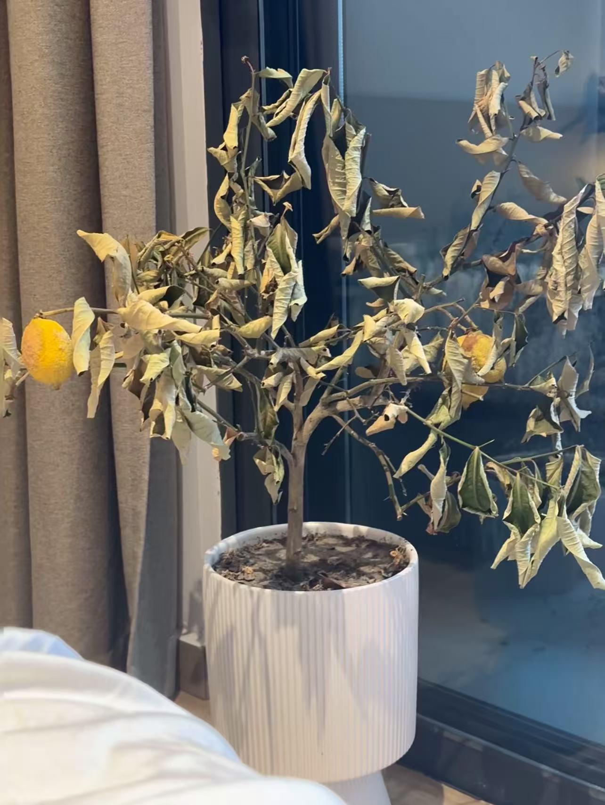
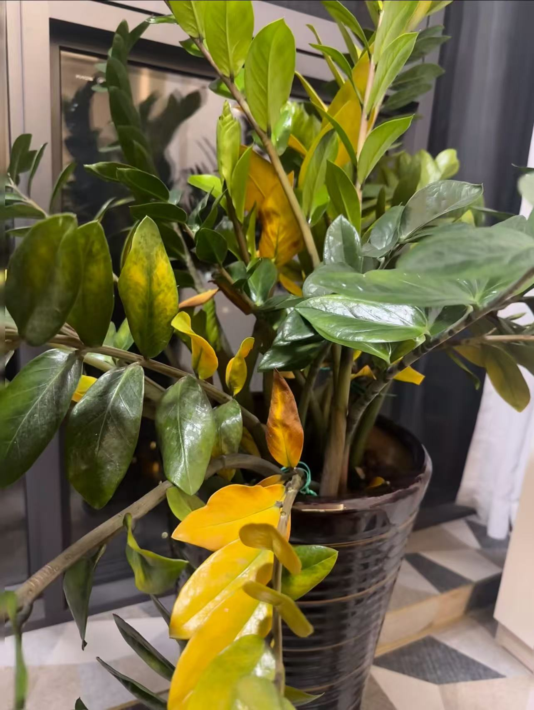
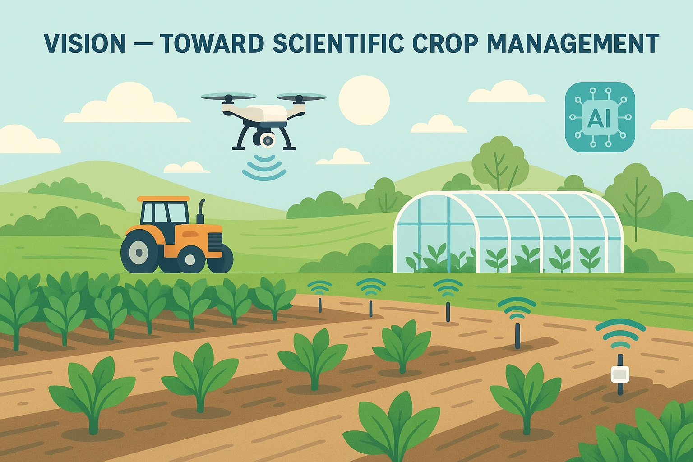

Indoor plants are easy to love but hard to maintain. Without proper knowledge,
many people water plants either too frequently or not enough, leading to wilted
or overwatered roots. Traditional plant care relies heavily on intuition
rather than data, resulting in inconsistent growth and unnecessary water waste.

Lack of watering → Plants wilt

Over-watering → Root rot & yellow leaves
Our goal is to introduce a data-driven and AI-assisted smart watering system
that continuously monitors soil moisture using IoT sensors, logs watering history,
and leverages GPT to provide intelligent irrigation recommendations.
This approach transitions plant care from experience-based decisions to
scientific, personalized, and scalable plant management — a concept highly
applicable to future smart agriculture.
🆚 Traditional Watering vs AI Smart Irrigation
| 🚫 Traditional Manual Watering |
🌱 IoT + AI Smart Watering (Our Solution) |
• Based on experience/guessing
• Easy to forget → plants dry
• Sometimes water too much
• No systematic tracking
• Hard to scale to multiple plants/agriculture
|
• Real-time soil moisture sensor
• Watering history & pot metadata stored
• Possible external weather integration
• GPT analyzes data → returns watering strategy
• Scalable toward scientific agriculture 🔥
|
🌾 Future Vision — Toward Scientific Crop Management
Our pot-scale prototype demonstrates how IoT sensing + AI reasoning can enable data-driven irrigation.
In the future, this framework can scale from home plants to
greenhouses, smart farming systems,
and automated large-scale irrigation control
— improving water efficiency, stability and yield.
